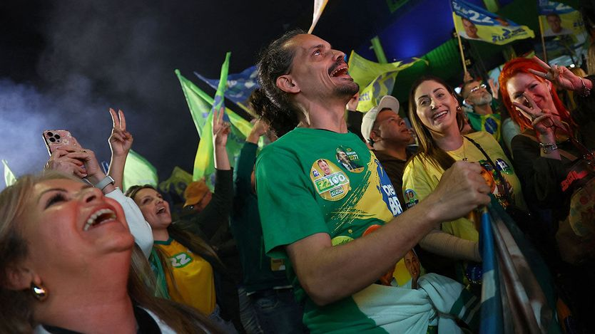

巴西如今是一个右翼国家
Brazil is a right-wing country now
博索纳罗家族承诺与唐纳德·特朗普结盟，并向民主制度发起攻击

- 巴西大选首轮投票中，劳工党及其领袖卢拉被弗拉维奥·博索纳罗及其自由党击败，标志着近四分之一世纪里主导巴西的左翼时代结束，也是拉美右翼政党一连串胜选中的最新一例。
- 弗拉维奥出自一个右翼政治王朝：其父、前总统雅伊尔因企图发动政变被软禁，并被禁止参选公职至2060年，他本人又被指与犯罪集团有牵连，却仍在首轮以微弱差距险些直接胜出。
- 自由党拿下1988年宪法颁布以来最强大的国会党团，并将在明年2月新参议员就职后控制参议院，博索纳罗家族因此获得修复巴西公共财政的机会，但更可能出现的是政治进一步极化、民主制度承受更大压力。
- 该家族扬言复仇，包括释放雅伊尔、弹劾并追究曾起诉他的最高法院大法官；参议院与法院的对峙可能引发宪政危机，而未来的总统还可能换掉最高法院11名大法官中的4人。
过去四分之一个世纪的大部分时间里，巴西由劳工党（PT）主导。一个由工会人士、进步天主教徒和学者组成的左翼联盟建立起庞大的福利国家，并定义了拉美版本的社会民主主义。那个时代已经结束。10月4日，劳工党及其年迈的领袖、人称“卢拉”的路易斯·伊纳西奥·卢拉·达席尔瓦在巴西大选首轮投票中被弗拉维奥·博索纳罗及其领导的自由党（PL）彻底击败。
博彩市场认为，弗拉维奥在10月25日第二轮投票中胜出的可能性很大。对于一个右翼政治王朝的继承人来说，这是惊人的结果——该王朝的家长、前总统雅伊尔·博索纳罗因企图发动政变而正被软禁在家。就在去年，雅伊尔还被禁止担任公职直到2060年。他的儿子被指与犯罪集团有牵连。尽管如此，弗拉维奥仍以微弱差距未能一举获胜。
即便弗拉维奥意外落败，这次选举对巴西与“让美国再次伟大”（MAGA）路线相近的右翼而言仍是一场胜利——这也是拉美右翼政党一连串胜利中的最新一例。自由党如今拥有自1988年巴西宪法颁布以来最强大的国会党团。它还是圣保罗、里约热内卢和米纳斯吉拉斯这三大州的最大政党，这三州合计贡献了巴西一半以上的GDP。
博索纳罗家族欣喜若狂。雅伊尔虔诚福音派的妻子、他的另外两个儿子以及他的兄弟都赢得了国会议席。从明年2月新当选参议员就职起，自由党及其盟友将掌控参议院，从而能够改写法律。预计他们会扶持商业、削弱环保保护。一些外部人士会警告不要再让亚马孙雨林受到更多破坏。另一些外部人士，包括美国，则会渴望有机会开采巴西储量巨大的关键矿产——这些至关重要的资源，其全球供应目前主要由中国掌控。
这种国会实力意味着自由党拥有一个难得的机会来修复巴西灾难性的公共财政。改写那些强制政府支出保持高位并不断增长的法律，将抑制借贷、压低利率并刺激投资——从而提振增长。这给了博索纳罗家族为巴西创造辉煌经济未来的空间。
而这意味着放弃眼下的开支，博索纳罗家族对此兴趣寥寥。更可能的结果是政治更加两极分化，以及巴西脆弱的民主制度承受压力。胜利者将为MAGA式的文化冲突而欢欣鼓舞。两位右翼国会议员尼古拉斯·费雷拉和卢卡斯·帕瓦纳托获得的选票超过巴西历史上任何候选人；两人都是年轻的社交媒体网红，他们憎恶“觉醒文化”的程度，丝毫不亚于对枪支和上帝的喜爱。
博索纳罗家族将寻求报复。弗拉维奥的一大竞选承诺就是释放他的父亲。许多参议员候选人誓言要扳倒那些起诉雅伊尔的最高法院大法官（其中一些人卷入了腐败丑闻）。“我们不仅要弹劾，”自由党新科参议员比亚·基西斯说，“我们要他们下台、接受调查并坐牢。”
弹劾最高法院大法官需要参议院多数票。这两大强势机构之间的对峙可能引发宪政危机。自认为在捍卫民主的大法官们将动用广泛权力以保住职位。士气高涨的国会则会攻击法院。无论谁当总统，都将发挥决定性作用，尤其是因为未来几年他很可能会任命四位新的大法官，取代最高法院11名大法官中的四位。
无论这场斗争结局如何，巴西的结果很可能是新的怨恨与公众愤世嫉俗情绪的加深。巴西人有充分理由拒绝劳工党——因其走入死胡同的政策、自身的腐败以及缺乏新面孔的领导层。但他们同样有充分理由担忧，这种拒绝如今正把他们引向何方。■